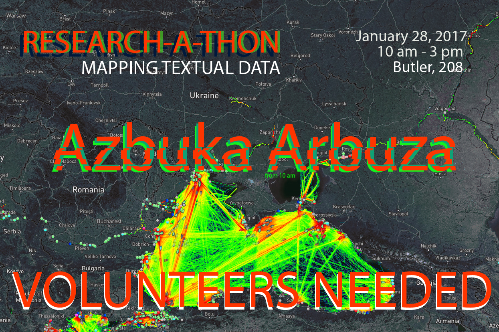

Past Events
Azbuka Arbuza: Mapping Fruit and Vegetable Names in the Black Sea Region
A Black Sea Networks Research-a-thonorganized by Serhii Tereshchenko and Bradley Gorski
Saturday, January 28, 10:00 am-3:00 pm | Butler Library, 208, Columbia University
Our research-a-thon will compile a database that shows when the words for fruits and vegetables entered the various Black Sea languages. This data set will allow us to map the spread of these linguistic units against known Black Sea trade routes, to see whether, as one might expect, fruit names were borrowed as the fruits themselves were bought and sold. If this hypothesis proves inadequate, the non-coincidence of trade routes and linguistic spread could give rise to speculation about alternative or previously unknown trade routes, about the (intentional) skewing of linguistic data to conform to narratives of nationhood, or other possibilities.
The resulting data set will be made available to other scholars to employ in their own research, expand to adjacent regions, or re-imagine in other ways. Our visualizations will be presented on the Black Sea Networks website and contribute to a publication in the forthcoming issue of Russian Literature on Digital Humanities in Slavic Studies.
We invite anyone interested in taking part in this exciting research project to write Bradley Gorski for details on how to participate.
Technologies of Dissent: Book Piracy as Peer Preservation
A Black Sea Networks Seminarwith Dennis Tenen
Friday, January 20, 4:00-6:00 pm | Columbia University
This talk will introduce the audience to one of the most influential online libraries, built and maintained by a small team of volunteers in Eastern Europe and beyond. Contemporary market-based systems of knowledge distribution, it will argue, lead to major global inequities of access. Grassroots communities organize to address such deficiencies. Their efforts deserve our critical attention and support. I will finally use the initial case study to advance a research program that examines literary production in its social and infrastructural contexts.
Dennis Tenen is Assistant Professor in the Department of English and Comparative Literature, Columbia University. A former software engineer at Microsoft and currently faculty associate at Columbia's Data Science Institute, his first monograph, Plain Text: The Poetics of Computation is forthcoming from Stanford University Press in 2017. His work appears on the pages of Computational Culture, boundary2, and Modernism/modernity on topics that range from book piracy, unintelligent design, and aesthetics of data visualization. He is a co-founder of Columbia's Group for Experimental Methods in the Humanities, a research collective whose work has received numerous awards, major grants, and recognition from the press in The New York Times, Fast Company, Der Spiegel, and Le Monde.
Discussant: Serhii Tereshchenko (Columbia History)
The Realm Between Waters
Film ScreeningThursday, December 1, 5:30-7:30 pm | 1201 International Affairs Building, Columbia University
The Realm Between Waterspremiered in New York on December 1, 2016, courtesy of the Romanian news agency AGERPRES. This documentary depicts the lives of Lipovan Russians who live between the Black Sea and the Danube in the Danube Delta. It is about union, cultural preservation, unique architecture, and natural landscapes.
Thanks to: Alex Giboi, Director General, AGERPRES Romania, Sergiu Olteanu, Director of Photography, AGERPRES, and Alex Micsik, Photojournalist, for bringing this project to the Black Sea Networks initiative.
The Realm Between Waters, Part I (in Romanian):
The Realm Between Waters, Part II (in Romanian):
Women in Black Sea Pilgrim Networks
A Black Sea Networks Seminarwith Valentina Izmirlieva speaking on "Hajji Mama": Christian Pilgrimage and Female Empowerment in the Late Ottoman Empire
and Nikolaos Chrissidis on Conduct Unbecoming: Women Pilgrims from the Russian Empire in the Holy Land in the late 19th and early 20th CenturiesFriday, December 2, 4:00-6:00 pm | 703 Hamilton Hall, Columbia University
The Black Sea Networks Seminar series provides a forum for developing innovative methodological approaches to networks around the Black Sea region. Seminars will include leading scholars, with junior scholars acting as discussants. The events are free and open to the public. Light refreshments will be served after each event.

"Hajji Mama": Christian Pilgrimage and Female Empowerment in the Late Ottoman Empire
While the Christian “Hajj” to Jerusalem emerged as an Ottoman phenomenon already in the 17th century, in the early 19th century it underwent a significant transformation. The hajjis began to travel “family style,” taking along not only their wives and male children, but also their elderly mothers and unmarried daughters of all age. Despite the dangers of the long trip, some took their new brides on a honeymoon pilgrimage so that their first child would be conceived in Jerusalem, and some even took their pregnant wives so that they would give birth in the Holy Land. The Orthodox Hajj to Jerusalem thus emerged as a family project and a surprising vehicle for female mobility, creativity, and empowerment. This talk will explore how this transformation occurred and why.Valentina Izmirlieva is a historian of Balkan and Russian religious cultures. She holds an appointment as Professor of Slavic Literatures and Cultures at Columbia University, where she has taught since 1999 and currently serves as Chair of the Department of Slavic Languages. She is the author of All the Names of the Lord: Lists, Mysticism, and Magic (Chicago, 2008) and the Principal Investigator of the global initiative “Black Sea Networks.” Her talk is based on a current book project, Christian Hajjis: Mobility and Status in the Late Ottoman Empire, which explores Christian-Muslim cultural transfers in the larger Black Sea area during the long 19th century.

Photo courtesy of the Russian Ecclesiastical Mission in Jerusalem
Conduct Unbecoming: Women Pilgrims from the Russian Empire in the Holy Land in the late 19th and early 20th Centuries
By the beginning of the 20th century, two-thirds of all pilgrims from the Russian Empire to the Holy Land were female. Their lived experience of pilgrimage involved visits to the shrines and the associated devotional practices, but also everyday problems and the unavoidable navigation around international diplomatic issues, local politics and Greek-Russian relations of the time. In facing some or all of these challenges, women pilgrims proved to be active agents, willing to antagonize constituted authority in order to preserve a modicum of independent action. As such, they energetically pursued their own version of the pilgrimage experience, above and beyond that envisioned by Russian authorities in the Holy Land.Nikolaos Chrissidis is Professor of Russian History at Southern Connecticut State University. He received his BA from the Aristotle University of Thessaloniki (Greece, 1990) and his PhD from Yale University (2000). He specializes in the religious and cultural history of early modern and modern Russia and in Russian-Greek cultural relations. His monograph, entitled An Academy at the Court of the Tsars: Greek Scholars and Jesuit Education in Early Modern Russia, was published by Northern Illinois University Press in 2016. He has authored articles and essays and co-edited the volume Religion and Identity in Russia and the Soviet Union: A Festschrift for Paul Bushkovitch (Bloomington, IN: Slavica Publishers, 2011). His current research project is a study of the “lived experience” of pilgrimage to the Holy Land from the Russian Empire in the long nineteenth century.
Discussant: Ulug Kuzuoglu (Columbia History)
Digital Humanities and Russian & East European Studies Symposium
Saturday, November 12, 10 am – 8 pm | Yale University (451 College St.)

- 10:00-12:00. Panel: “Digital Humanities and Russian & East European Studies session I.”
Chair: Marijeta Bozovic.
Panelists: David Birnbaum, Elise Thorsen, Jessie Labov, Natalia Ermolaev. - 12:00-2:00. Catered lunch.
- 2:00-4:00. Panel: “Digital Humanities and Russian & East European Studies session II.”
Chair: Molly Brunson.
Panelists: Ann Komaromi, Joan Neuberger, Kelly O’Neill. - 4:00-6:00. Roundtable: “Black Sea Networks.”
Chair: Marta Figlerowicz.
Panelists: Valentina Izmirlieva, Alex Gil, Dennis Tenen, and Bradley Gorski. - 7:00. Conference reception and dinner.
More information on the Yale University DHREES site.
THE IMITATION IMPERATIVE:
MAKING SENSE OF THE CRISIS OF BLACK SEA EUROPEA Public Lecture by Ivan Krastev
September 23, 2016 | Columbia University
text by Sophie Pinkham
On September 23rd, Ivan Krastev kicked off the Black Sea Networks initiative with a lecture entitled “The Imitation Imperative: Making Sense of the Crisis of Black Sea Europe.” Krastev, an expert on Eastern European democracy, called for a re-examination of the post-1989 world order, arguing that the model of universal imitation of Western liberal democracy has become a source of renewed nationalist and anti-globalist sentiment. Today, he argued, the most urgent question is not how the West is transforming the rest of the world, but how the West itself is being transformed. These questions are especially pertinent in the Black Sea region, at the intersection of the three empires—Habsburg, Ottoman, and Russian—that constituted the European order until the end of the First World War.
According to Francis Fukuyama’s influential concept of the “end of history,” there were simply no alternatives to liberal democracy; the post-1989 world would be premised on imitation of the American model of democracy. But this “imitation paradigm,” Krastev argued, proved risky for both sides. It has been harmful for the imitated—especially the US--because it has brought a loss of critical distance, a constant self-congratulation that inhibits self-improvement. Meanwhile, imitators have come to see the paradigm as a form of humiliation, a negation of national identity.
Many of the supposed advantages of the post-1989 world have turned out to be disadvantages. Open borders have fuelled radical nostalgia, as countries like Bulgaria experience such high levels of emigration that they feel that they are disappearing as nations. The use of English as the international lingua franca has discouraged Americans from learning foreign languages, limiting their experience and understanding of other countries. “America is becoming transparent to the world, but the world is not transparent to America,” Krastev said.
The imitation imperative has also engendered a certain cognitive dissonance. In the 1990s, Eastern European countries longed to be “normal”—i.e., like the West—but this discourse of normality carried a problematic double meaning. On one hand, “normal” is used to indicate what is morally right. On the other hand, “normal” means commonplace. In a place like Bulgaria, for example, to give and take bribes has remained commonplace—“normal”—while being the opposite of the normative Western model promoted by the imitation imperative.
This sense of contradiction has fostered more cynical types of imitation of the West, with Russia offering some of the most striking examples. Putin has used rigged elections not to establish legitimacy in the eyes of the West, but to persuade the Russian public that there is no alternative to his rule. When he lied about the presence of Russian troops in Crimea in 2014, he did not expect anyone to believe him. Instead, he wanted to compare his own lies to Western ones—for example, about the presence of weapons of mass destruction in Iraq. In Putin’s hands, Krastev said, the imitation imperative becomes the idea that “I will do to you what you did to me, in order to show you that what you call order is really disorder.” Meanwhile, American anxiety about Trump as Putin’s Manchurian candidate follows Russia’s conspiratorial logic: every domestic problem is perceived as the result of an external threat. By playing into this reasoning, Krastev argued, Americans only aid Putin in his efforts to position himself as a powerful leader.
Today, imitation can no longer be understood as unilateral and purely beneficial. The post-1989 world order must be understood not only in terms of the Cold War, but in terms of what came after it. The Black Sea Networks initiative, Krastev said, will seek to reimagine the last 25 years in a way that will allow a better understanding of the present.
Watch the full lecture here:
Ivan Krastev is one of the most visible public intellectuals in Europe today and an expert on Eastern European democracy. The Chairman of the Centre for Liberal Strategies in Sofia, Bulgaria, and Permanent Fellow at the Institute for Human Sciences in Vienna, Austria, he is a founding board member of the European Council on Foreign Relations and a member of the Board of Trustees of the International Crisis Group (2016-2018). His books in English include Democracy Disrupted: The Politics of Global Protest (U Penn Press, 2014), In Mistrust We Trust: Can Democracy Survive When We Don't Trust Our Leaders? (TED Books, 2013), The Anti-American Century (CEU Press, 2007), and Shifting Obsessions: Three Essays on the Politics of Anticorruption (CEU Press, 2004). Krastev is a contributing opinion writer for The New York Times. He is currently working, in collaboration with Stephen Holmes, on a book on Russian politics.
LeftEast Summer Convergence
August 15–19, 2016 | Boğaziçi University, Istanbul
The Peoples' Movements Summer Convergence this July in Istanbul took place under uniquely arresting circumstances: amidst an unsuccessful military coup and its immediate aftermath. While we had chosen Istanbul as the site of our convergence in part out of recognition of the city's centrality to current conflicts and in solidarity with Turkey's deeply embattled leftist community, none of us could have guessed just how germane our plan for discussion would be to current events.
Read more about LeftEast's summer 2016 convergence and its political context here.
We would like to thank the Open Society Initiative for Europe (OSIFE), Columbia University’s Black Sea Networks Project, and individual members of the LeftEast editorial board, who all financially contributed to the travel expenses and dormitory costs of the participants.